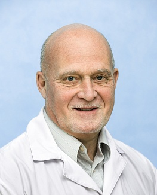

Позитронно-эмиссионная томография (ПЭТ) Компьютерная томография
ПЭТ/КТ – это современная методика позволяющая совместить молекулярную визуализацию ПЭТ и структурные данные полученные при КТ.
Узнать больше Аппарат ПЭТ/КТ
Позитронно-эмиссионная томография (ПЭТ)
ПЭТ/КТ – это современная методика позволяющая совместить молекулярную визуализацию ПЭТ и структурные данные полученные при КТ
Главные задачи, которые решает ПЭТ/КТ с 18F-ФДГ
Стадирование опухолевого процесса;
Выявление злокачественной опухоли;
Определение точной локализации;
Дифференциальная диагностика;
Оценка эффективности лечения.
Исследования
В нашем отделении проводятся исследования с применением 18F-фтордезоксиглюкозы (18F-ФДГ) – биологического эквивалента глюкозы, который активно поглощается опухолевыми клетками.
Расшифровка результатов
Информация, которую фиксируют датчики сканера, поступает в цифровое устройство, обрабатывается и выводится на монитор. Расшифровка результатов ПЭТ КТ – требует высокой квалификации, это трудоемкая и длительная работа.
Project name
User interface design
Project name
User interface design

Project name
User interface design
Project name
User interface design
Кондаков
Антон Кириллович
Антон Кириллович
Врач-радиолог/рентгенолог.

Высшее, Второй МОЛГМИ им. Н.И.Пирогова, 1988 г.
Ординатура по специальности терапия, Второй МОЛГМИ им. Н.И. Пирогова, 1988-1990 г.г.
Сертификационный цикл по радиологии, Российская Медицинская Академия Послевузовского образования, 2013, срок действия 2013-2018 г.г.
Сертификационный цикл по рентгенологии,
ГБОУ ВПО РНИМУ им. Н.И.. Пирогова, 2011, срок действия 2011-2016 г.г.
Сертификационный цикл по организации здравоохранения и общественному здоровью, Российская Медицинская Академия Послевузовского образования, 2013, срок действия 2013-2018 г.г.
Знаменский Игорь Альбертович
Врач-радиолог,
заведующий отделением радионуклидных методов диагностики
заведующий отделением радионуклидных методов диагностики
Харина
Дина Сергеевна
Дина Сергеевна
Врач-радиолог/рентгенолог
диагностика, лучевая терапия, с 2013 года.
2011-2013 г.г., срок действия 2018-2023 г.г.
Мосин
Дмитрий Юрьевич
Дмитрий Юрьевич
Врач-радиолог/рентгенолог
кафедра хирургических болезней педиатрического и стоматологического факультетов, 2011-2012 г.г.